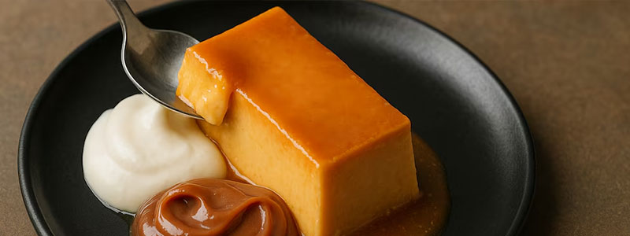
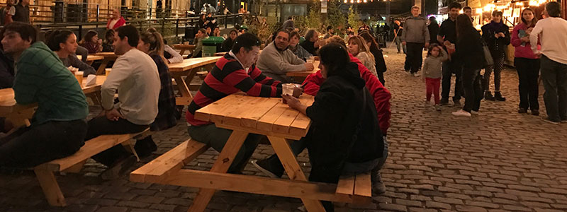

¿Cuál es el sabor de la gastronomía porteña?
En Buenos Aires vas a encontrar platos típicos y comida de todo el mundo

En Buenos Aires vas a encontrar platos típicos y comida de todo el mundo

En este buscador vas a poder filtrar por nombre, tipo de establecimiento y barrio

Conoce los patios y mercados en donde podés disfrutar de la mejor gastronomía de la ciudad